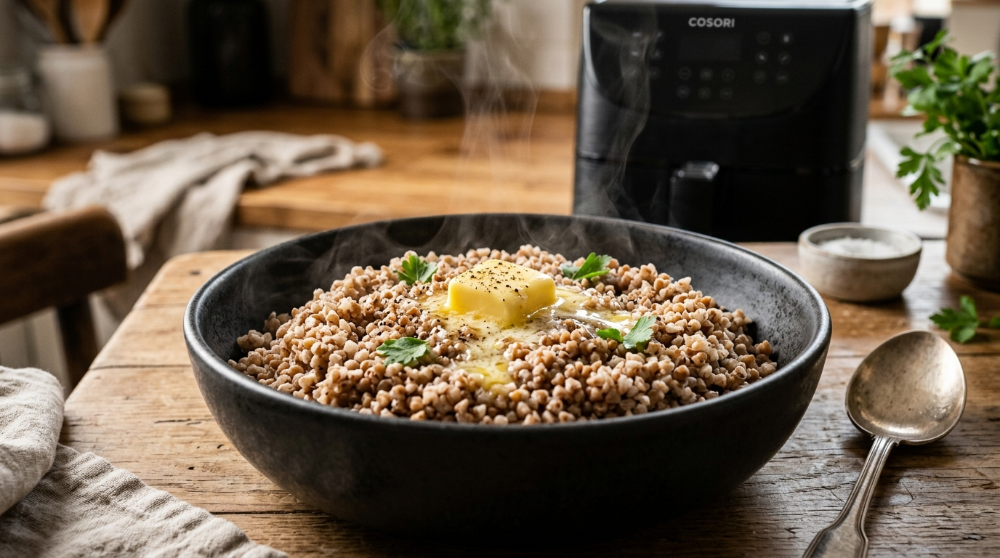
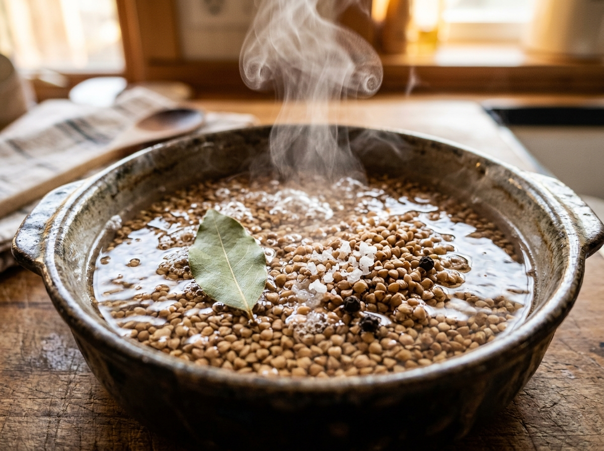
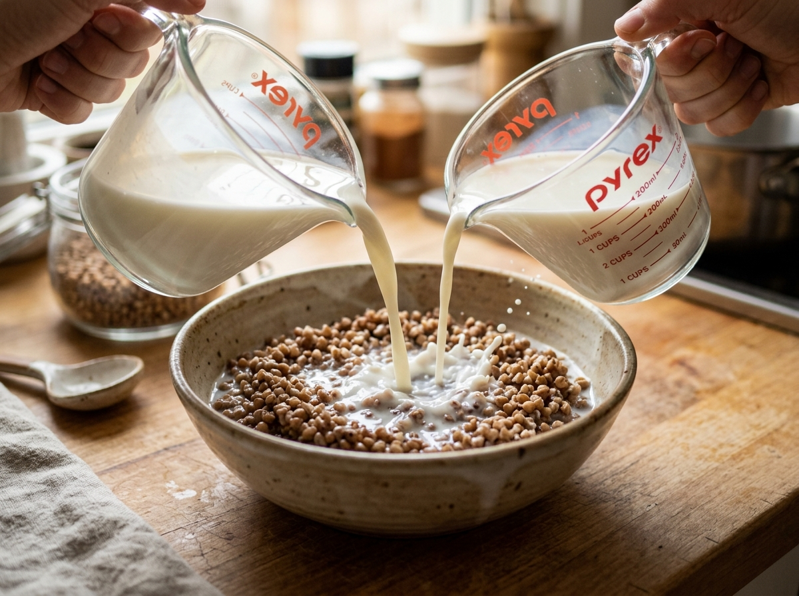
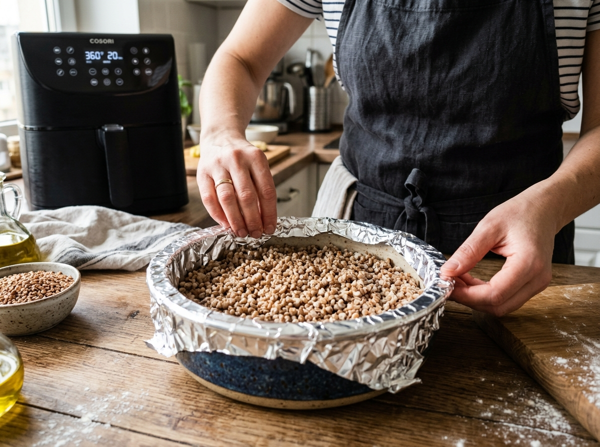

Нежнейшая, рассыпчатая и бархатистая гречневая каша на молоке 2.5% со сливочным маслом и эффектом томления в русской печи. Идеальный сочный гарнир к запеченной куриной грудке.

240 г гречки промойте 2–3 раза холодной водой и полностью слейте влагу. Пересыпьте крупу в жаропрочную форму (объемом от 1.5 л), добавьте 1 ч. л. соли, черный перец и лавровый лист. Залейте 350 мл крутого кипятка и оставьте на столе на 15–20 минут. Зерна впитают воду, набухнут и начнут размягчаться.

Подогрейте 350 мл молока 2.5% в микроволновке или ковшике почти до закипания (горячее молоко не остановит прогрев зерен). Влейте горячее молоко в форму прямо к набухшей гречке и аккуратно перемешайте лопаткой.

Плотно накройте форму двумя слоями фольги, тщательно обжав бортики вокруг емкости. Это критически важно: в аэрогриле мощный конвекционный обдув, без фольги верхние зерна высохнут, а под фольгой создается эффект томления в глиняном горшочке.

Установите форму в корзину аэрогриля. Выпекайте при температуре 165–170°C в течение 26–28 минут. Умеренная температура предотвращает бурное закипание молока и позволяет крупе впитать всю молочную сливочность.
Достаньте форму из аэрогриля, не вскрывая фольгу, и оставьте на столе на 10–15 минут (в это время можно быстро запечь курочку!). Перед подачей снимите фольгу, удалите лавровый лист, положите 15 г сливочного масла и перемешайте. Каша получается бархатистой, рассыпчатой и нежной!
В чистом молоке гречневое зерно разваривается медленнее из-за казеина. Кипяток быстро раскрывает крупу, а горячее молоко дает нежный сливочный вкус без пригорания.
Плотная фольга блокирует испарение влаги и защищает от прямого верхнего обдува тэна. Крупинки пропариваются равномерно снизу доверху.
Не добавляйте масло в начале: молочный жир при высокой температуре может оседать на дно. Растопленное в горячей каше масло в конце обволакивает каждую крупинку.